Examples gallery#
The EEGDash gallery is the runnable, narrative half of the docs: the Concepts chapter explains why a decision matters, the API reference enumerates every public symbol, and the gallery you’re reading shows the choices in motion against real BIDS-curated EEG records. Every script under examples/ is a sphinx-gallery tutorial – meaning it executes top to bottom on every documentation build, and the captured first figure is the thumbnail you see below.
The intended path: read the curated Tutorials in order, dip into How-to recipes when you have a specific question, then scale up using the Applied research projects, the EEG 2025 Foundation Challenge pipelines, and the High-performance computing track.
How to read this gallery
Reading order. Tutorials are sorted by category and numbered (
plot_00_*,plot_10_*, …). Inside a category they’re sequenced beginner-first; the file numbers are the intended path.Cards show the captured first figure. Sphinx-gallery stores the first
matplotlibfigure as the thumbnail, so the card preview is the literal output of running the script. A branded fallback is shown when the tutorial produces no figure.Difficulty. Each section header states the difficulty range (1 = absolute beginner, 3 = advanced / foundation-model tier).
Tutorials (curated learning path)#
Seven categories, ordered the way we would teach them: install, load, decode events, decode state, engineer features, evaluate rigorously, then scale to transfer and foundation models. Numbers are tutorial-id prefixes (plot_00_* through plot_73_*); skip rather than reorder them.
Start Here#
Difficulty 1. Three short lessons that take you from a fresh install to a working PyTorch DataLoader over real EEG records: find datasets and records, load one recording and inspect it, then turn an EEGDashDataset into windows and a dataloader. CPU-only, each runs in under a few minutes (plan §Category A, lines 360-380).
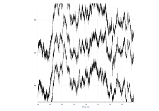
How do I load one EEG recording from EEGDash?
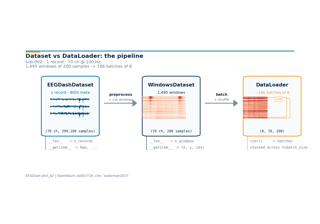
How do I turn one EEG recording into a PyTorch DataLoader?
Core Decoding Workflow#
Difficulty 1-2. The canonical EEG decoding pipeline in four lessons: preprocess and window, split without subject leakage, train a baseline against chance, and persist prepared data for reuse (plan §Category B). The leakage-safe split lesson is the rubric anchor for E3.27 invariants and Cisotto and Chicco 2024’s evaluation guidance.
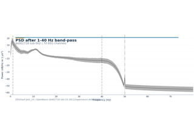
How do I preprocess EEG and create model-ready windows?
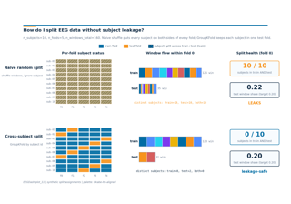
How do I split EEG data without subject leakage?
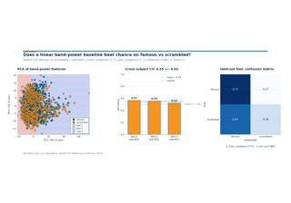
How do I train a leakage-safe baseline classifier on EEG?
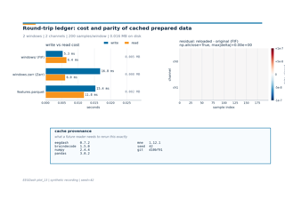
How do I save and reload prepared windows + features?
Resting-State and State Decoding#
Difficulty 1. The canonical beginner decoding lesson: eyes-open versus eyes-closed classification on resting-state EEG, decoded from alpha-rhythm differences with a band-power baseline (plan §Category D).
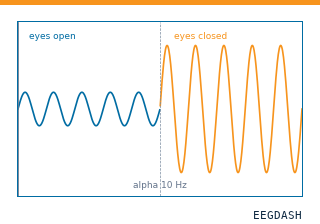
Decode eyes-open vs. eyes-closed from resting-state EEG
Feature Engineering#
Difficulty 1-2. EEGDash’s feature extraction package as a first-class option, not an afterthought to deep learning. Three lessons cover feature tables from windows, preprocessor and dependency trees that avoid recomputation, and a scikit-learn / LightGBM baseline straight from the feature table (plan §Category E).
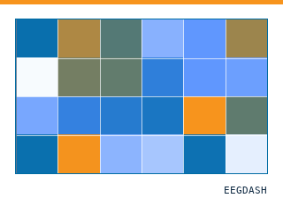
How do I turn EEG windows into a band-power feature matrix?
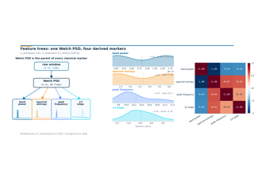
How do classical EEG markers compose on top of one Welch PSD?
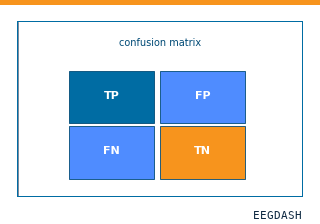
How do I push EEGDash features through a scikit-learn Pipeline?
Evaluation and Benchmarking#
Difficulty 2-3. Five lessons that treat decoding evaluation as a core skill, drawing on MOABB (Chevallier, Aristimunha et al. 2024). Builds from a single split toward benchmark-grade pipeline comparison: within-subject, cross-subject, cross-session, learning curves, and a paired Wilcoxon comparison of two pipelines (plan §Category F, lines 425-442).
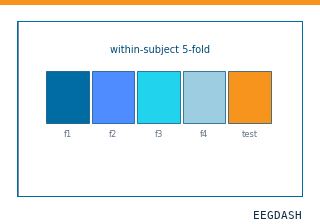
When is within-subject decoding the right scientific question?
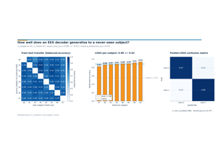
How well does an EEG decoder generalise to a never-seen subject?
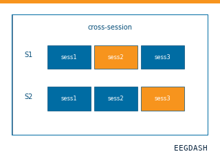
How much does a within-session decoder drift across sessions of the same subject?
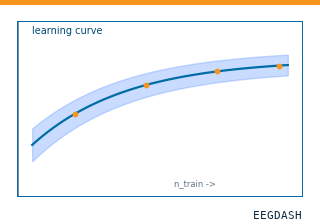
How does decoding accuracy scale with training-set size, and where does the curve plateau?
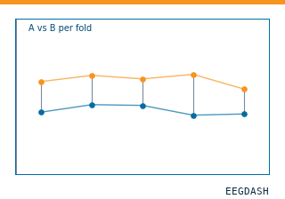
Is Pipeline A really better than Pipeline B, or did it luck out on one subject?
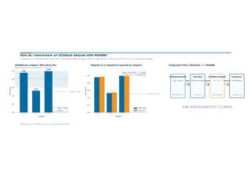
How do I benchmark an EEGDash dataset with MOABB?
Transfer, Foundation Models, and EEG2025#
Difficulty 3. Four advanced lessons on transfer learning and foundation-model fine-tuning, framed around the EEG2025 Foundation Challenge: EEGChallengeDataset basics, cross-task transfer (Challenge 1), subject-invariant p-factor regression (Challenge 2), and fine-tuning a Braindecode pretrained model (plan §Category H, lines 458-470). Builds on Schirrmeister et al. 2017.

How do I get started with the EEG 2025 Foundation Challenge dataset?
Pretrain on resting-state, fine-tune on contrast-change detection

Subject-invariant p-factor regression (EEG2025 Challenge 2)

How do I adapt a pretrained EEG model to a new task?

How do I plug EEGDash into the Meta NeuroAI ecosystem?
How-to recipes#
Task-focused snippets that assume you already know the basics: how to download a dataset, run preprocessing on SLURM, parallelize feature extraction, use the HPC cache, and work offline. Each guide answers a single question; cross-link with the HPC track when relevant (plan §Category I, lines 615-621 and 1021-1037).
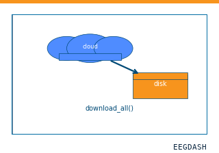
Download an EEGDash dataset in advance and validate the local cache
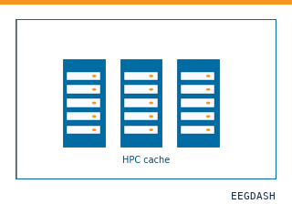
Place the EEGDash cache on shared or local cluster storage
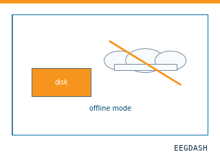
How-to: work offline against a populated EEGDash cache
Applied research projects#
Project-style examples that target a concrete scientific question – age regression, p-factor prediction, sex classification, P300 transfer, clinical-catalog summary – with realistic data sizes, runtimes, and limitations. Treat them as starting points, not prescriptive recipes (plan §Category G, lines 1052-1100).
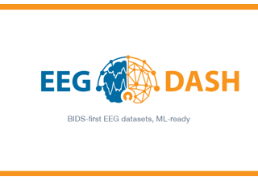
Age regression from EEG (applied case study)

How do I survey a clinical EEG dataset before training a model?
Cross-cohort P3 transfer with AS-MMD: train on one oddball, deploy on another

Predict p-factor from EEG with a Braindecode model (deep-learning regime)

Predicting p-factor from EEG with hand-crafted features (project starter)

Is resting-state EEG even predictive of the BIDS sex label? (Project Starter)
EEG 2025 Foundation Challenge#
End-to-end pipelines for the two EEG 2025 Foundation Challenge tracks: cross-task transfer learning (passive to active), and subject-invariant representations for clinical factor prediction. Pre-trained weights ship alongside each tutorial.

How do I get my first baseline running for EEG2025 Challenge 1 (CCD)?

How do I submit a baseline to EEG2025 Challenge 2 (predict the p-factor)?
High-performance computing#
Reference setup for running EEGDash on shared HPC clusters: SLURM submission scripts (CPU and GPU), a Dockerfile, and a tutorial showing how to combine the on-disk cache with batch scheduling for an eyes-open / eyes-closed run.